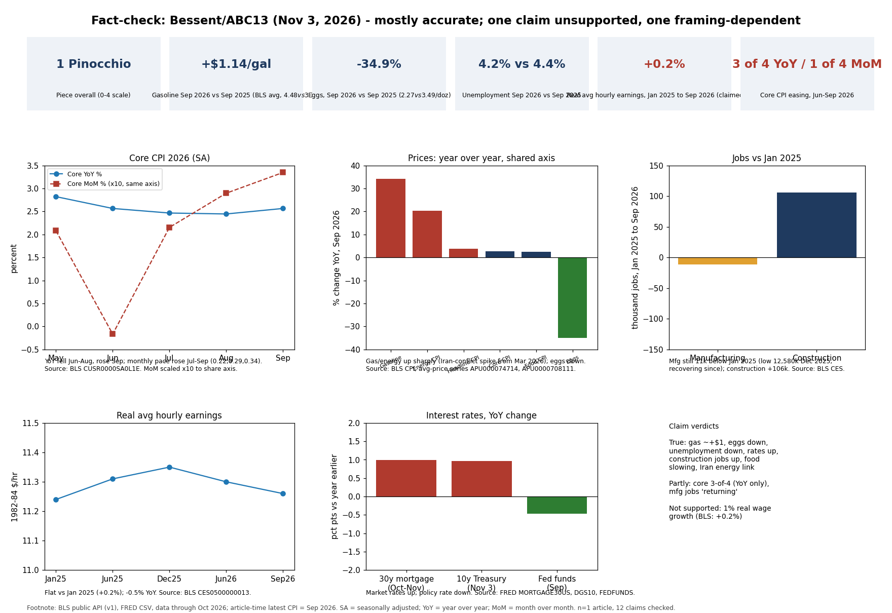

Of 12 claims and quotes, 6 are confirmed by BLS/FRED data, 3 are partly true, 1 is not supported (Bessent's 1% real wage growth: BLS real average hourly earnings are up only 0.2%, Jan 2025 to Sep 2026) and 2 quote-level items could not be checked against a transcript. The article does challenge the food-price claim itself. It does not challenge the wage or core claims.
| Claim | Key values and source | Answer | Confidence |
|---|---|---|---|
| Interview Monday (Nov 2, 2026); economy 'not where the administration wants it' | Bessent opinion; dated article Nov 3 | Not independently checkable (audio/transcript not accessed) | low |
| Gas prices about a dollar higher than a year ago | BLS avg price: Sep 2026 $4.482 vs $3.339 (+$1.14); Oct $4.454 vs $3.239 (+$1.22) | True | high |
| Interest rates are up | FRED: 30y mortgage 7.18% (Nov 5) vs 6.19% (Oct 23, 2025); 10y 4.95% vs ~3.98%; but fed funds 3.75% (Sep) vs 4.22% a year earlier | True for market/mortgage rates; policy rate is lower | high |
| Egg prices down over past year | BLS: $2.272 vs $3.488/doz Sep (-34.9%) | True | high |
| Unemployment down over past year | BLS LNS14000000: 4.2% Sep 2026 vs 4.4% Sep 2025 (Oct 2026 4.1%, released after the interview) | True (small, 0.2 pt) | high |
| 'Manufacturing renaissance'; manufacturing and construction jobs returning | BLS CES: mfg 12,662k Sep 2026 vs 12,673k Jan 2025 (-11k), up from 12,580k low Dec 2025; construction 8,370k vs 8,264k (+106k) | Construction true; manufacturing partly (recovering but not above Jan 2025). 'Renaissance' is characterization | medium |
| 1% real wage growth since taking office, better than prior administration | BLS real avg hourly earnings (CES0500000013): 11.24 Jan 2025 to 11.26 Sep 2026 (+0.2%); -0.5% YoY; nominal +5.6% vs CPI-U +6.1%. Treasury blue-collar series not located | Not supported by headline BLS series; may rest on a narrower measure (blue-collar) not shown | medium |
| Once Iran conflict ends, oil supply improves and energy prices fall | Energy CPI +20.4% YoY Sep 2026, jump from Mar 2026; prediction, not verifiable | Context true; forecast uncheckable | medium |
| Core inflation down 3 of past 4 months | Core CPI YoY: May 2.82, Jun 2.57, Jul 2.47, Aug 2.45, Sep 2.57 = down Jun, Jul, Aug, up Sep (3 of 4). Monthly core pace: Jun -0.02, Jul 0.22, Aug 0.29, Sep 0.34 (accelerating) | True only on the YoY reading; misleading on the monthly pace | medium |
| Food price rate of increase dropped substantially; prices still rising | BLS food CPI YoY 3.2% Aug 2025, 3.1% Sep 2025 to 2.45% Sep 2026; index still rising | True but 'substantially' is generous (~0.7 pt) | medium |
| Affordability top voter concern; polls split, few slightly favor Democrats | Marist Sep 14-15: Dems 42 vs GOP 34 on economy; Pew ~37/36; Third Way 38/38; Fox: Dems better on inflation | Broadly consistent; 'slightly' understates Marist/Fox gaps | medium |
| Quotes: 'industrial renaissance, a manufacturing renaissance'; 'get to the other side of the Iran conflict'; core inflation quote | Only seen via a fetch tool summary; text not reproduced verbatim | Not checkable here (no transcript/video) | low |
Article metadata (Tom Abrahams, ABC13, Nov 3, 2026) came from a WebFetch summary. Data pulled from the BLS public API v1 (no key) and FRED public CSV. The latest CPI at interview time was September 2026; October 2025 CPI is missing (2025 lapse in appropriations), so Oct 2026 YoY cannot be computed. Real earnings use BLS series CES0500000013 (1982-84 dollars). Pinocchio grade: 1 for the piece (accurate reporting, limited context); Bessent's statements on their own would rate about 2.